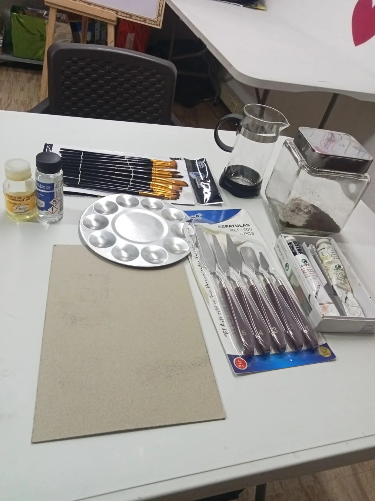
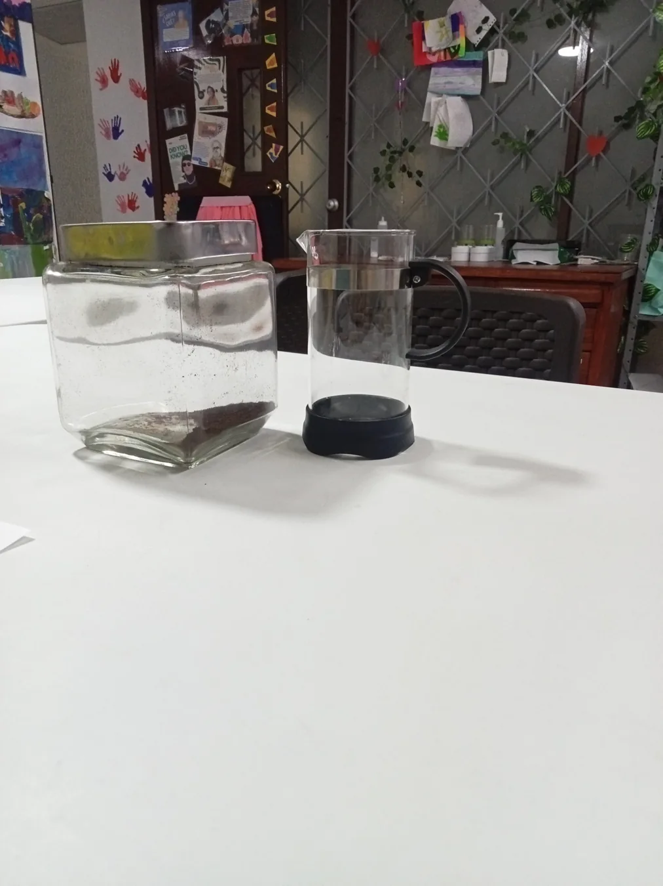
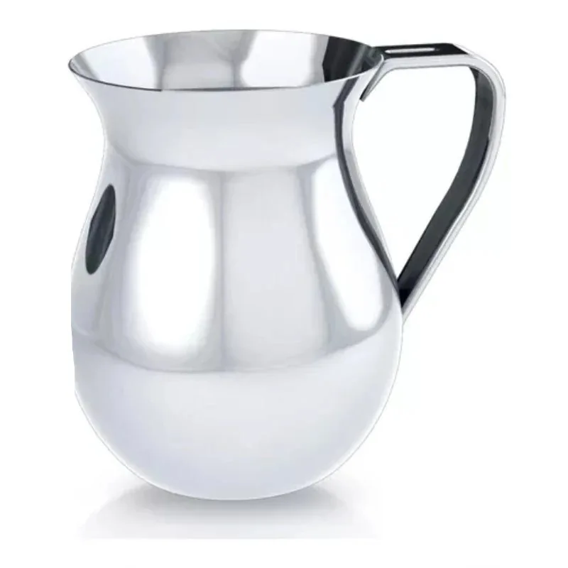
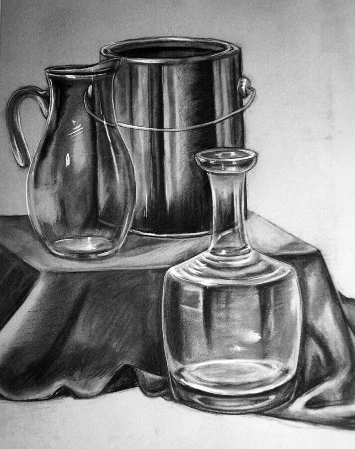
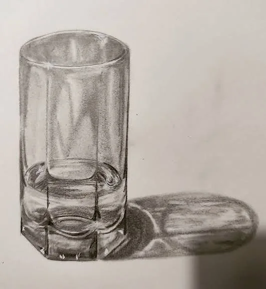

01 /
Zona iluminada
Es la parte del objeto que recibe la luz con mayor intensidad. Allí aparecen los valores más claros y los brillos.
Valores clarosAprende a mirar los objetos como artista: descubre dónde nace la luz, cómo aparece la sombra y por qué una escala de grises puede crear profundidad.
Antes de tomar el pincel, necesitas entender qué le pasa a un objeto cuando recibe luz. Estas son las pistas que debes reconocer.
Es la parte del objeto que recibe la luz con mayor intensidad. Allí aparecen los valores más claros y los brillos.
Valores clarosEs la región menos iluminada del mismo objeto. Los cambios de gris hacen que percibamos su volumen.
Valores oscurosEs la sombra que el objeto produce sobre la mesa o el suelo al bloquear parte de la luz.
Relación con el entornoIdea fundamental: no pintamos únicamente objetos: representamos cómo la luz se encuentra con sus formas.
Comprobarlo ahoraCambia la dirección y la intensidad. Mira cómo se transforma el volumen y hacia dónde se desplaza la sombra proyectada.
Compara la sombra con la luz a 25° y a 75°. Mantén la misma dirección e intensidad para observar qué cambia al mover solo la altura.
Baja la luz y observa cómo se alarga la sombra.
Prueba esto: mueve la luz de izquierda a derecha y fíjate en qué sentido se desplaza la sombra sobre la superficie.
Una escala de grises organiza los valores tonales desde los más claros hasta los más oscuros. Selecciona uno de los diez tonos para estudiarlo.
Los claros sugieren zonas iluminadas.
Los intermedios hacen las transiciones.
Los oscuros ayudan a crear profundidad.
Los valores intermedios unen las zonas iluminadas con las zonas en sombra.
Observa los valores tonales de objetos reales y usa la escala de grises para representar sus luces, sombras y volumen al óleo sobre cartón piedra.
Organiza pinturas al óleo, pinceles, paleta, recipientes, los medios de pintura indicados por tu docente y el cartón piedra preparado para el ejercicio.
Una mesa ordenada te ayuda a concentrarte en la observación.

Pinta en un costado del cartón piedra una escala de grises, del tono más claro al más oscuro. Tenla a la vista como referencia durante el ejercicio. La guía propone preparar los dos medios, trementina y aceite de linaza, en proporciones iguales: 50 % y 50 %.
La mezcla de medios y las condiciones de uso deben seguir las indicaciones de tu docente y las etiquetas de los productos.
Coloca objetos sobre una superficie y presta atención a la dirección de la luz. Toma una foto del montaje. Úsala como referencia al pintar para distinguir las zonas iluminadas, las sombras propias y las sombras proyectadas.
Mover la lámpara puede revelar formas que antes no percibías.

Empieza el boceto con el tono más claro. Aplica después los grises intermedios que más se distinguen en los objetos. Incorpora al final los tonos más oscuros y reserva las zonas de luz.
No persigas el detalle desde la primera pincelada. Busca primero las grandes masas tonales.
Revisa la forma, el volumen, las transparencias, los reflejos y el contraste. Compara siempre tu pintura con los objetos reales.
El objetivo no es copiar cada contorno: es transmitir profundidad y volumen.
Observa.
Compara.
Corrige.
Cuida tu espacio de trabajo: la trementina es inflamable y sus vapores pueden ser perjudiciales. Trabaja con ventilación adecuada, evita llamas y fuentes de calor, sigue las etiquetas y usa los materiales con supervisión docente cuando corresponda. Los trapos con aceite de linaza requieren manejo seguro.
Estos referentes visuales de la guía muestran cómo se comporta la luz en superficies diferentes.

Observa cómo los brillos y reflejos siguen la curvatura del metal y ayudan a definir su volumen.

Compara los claros y los oscuros del bodegón para ver cómo el contraste separa los objetos y crea profundidad.

Distingue los reflejos y las zonas transparentes del vaso de la sombra que proyecta sobre la mesa.
Un reto pequeño para aprender algo grande: reconocer el orden de los valores tonales.
Los cinco tonos están desordenados. Selecciona un recuadro y luego otro para intercambiarlos, hasta formar la escala de más claro a más oscuro.
Pista: los tonos parecen más claros cuando reflejan más luz.
Responde seis preguntas. Cada respuesta tiene una explicación para ayudarte a entender, incluso si te equivocas.
Vuelve a experimentar, observa otros objetos y lleva lo aprendido a tu propia pintura.